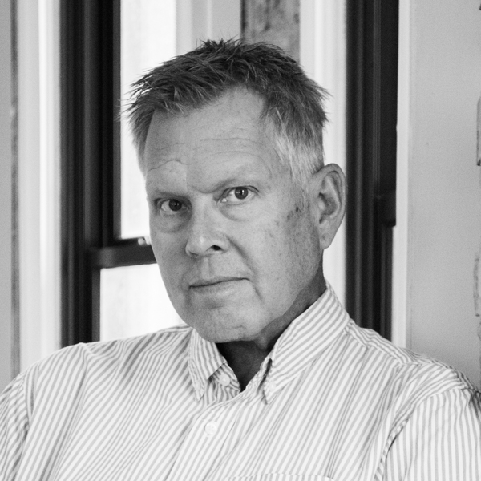

EDA designs regionally relevant, community-focused, and environmentally responsive buildings rooted in the unique climate and context of the Intermountain West. For over 60 years, our philosophy of Utah Modernism has guided a design practice that aims to do more than simply make good buildings, but to create places that inspire and transform communities.
Staff
AJ Ansbergs
Amanda Webb
NCIDQ
NCIDQ
Angela Stevenson
NCIDQ
NCIDQ
Angelica Pavoni
AIA
AIA

Brian Fryer
Daniel Rogers
AIA
AIA
Greg Packer
Architect, LEED AP
Architect, LEED AP

Jake Hill
Jamie Petersen
Jennifer Bowser
CDT
CDT
Jonathan Hickerson
LEED AP
LEED AP
Karlie Primich
LEED GA
LEED GA
Katja Peterson
Assoc. AIA
Assoc. AIA
Kevin Thibault
Assoc. AIA
Assoc. AIA
Logan Prete
Matthew Rogers
Nelson Hansen
Nicholas Chilton
Sam Hammack
AIA
AIA
Sydney Christensen
NCIDQ, IIDA, LEED GA
NCIDQ, IIDA, LEED GA
Theresa Frazier
Tim Putnam